A kijelző egy olyan kimeneti periféria, amely az információt vizualizálja, így azt olvashatóvá teszi a felhasználó számára. A kijelzőket megjelenítési technológia szerint feloszthatjuk kétdimenziós megjelenítőkre, háromdimenziós megjelenítőkre, illetve mechanikus megjelenítőkre. A mechanikus megjelenítő lehet kétdimenziós is, illetve háromdimenziós is.
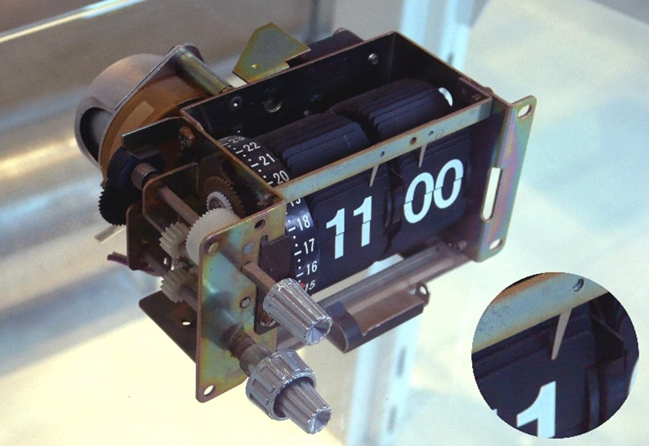Egy kétdimenziós mechanikus kijelző (split-flap kijelzőnek is nevezik)
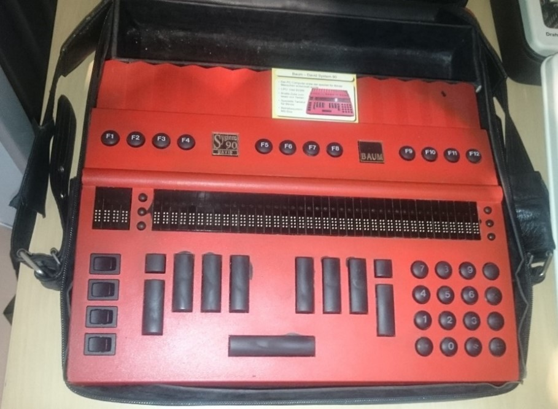A gép közepén látni lehet egy Braille-kijelzőt (háromdimenziós kijelző)
Kijelzők felosztása:
Az első működő katódsugárcsöves, vagy más néven CRT (Cathode Ray Tube) kijelzőt 1926. január 26-án Londonban mutatták be. Az első színesadást pedig 1928. július 3-án közvetítették. A módszer kidolgozója Karl Ferdinand Braun volt, aki 1897-ben már meg tudott jeleníteni ezzel a módszerrel egy képpontot. Az első töltéscsatolt elvű CRT televízió és kamera feltalálója Tihanyi Kálmán volt.
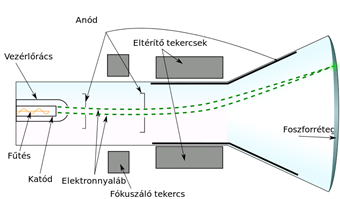A katódsugárcső felépítése
A CRT típusú kijelzőkben egy katódsugárcső található, elektronágyúval az egyik végén és foszforral bevont felülettel a másik végén. Az elektronágyú egy elektronnyalábot lő ki, ezt pedig elektromágneses tér segítségével irányítani lehet. Az elektronsugár a foszforborításba ütközik, amely emiatt felvillan, majd elhalványul. Ezt az elektronnyalábot a kijelző hátuljában elhelyezett elektromágnes irányítja. Ez az elektromágnes pedig vonalakat rajzol a foszfor borításra. Ezen vonalak száma adta meg a kijelző felbontását (tehát ebben az esetben a hagyományos értelemben vett pixelről nem beszélhetünk még a színes CRT kijelzőknél sem). A színes CRT kijelzőknél 3 elektronágyú van (mind a 3 alapszínnek – piros, zöld, kék). Az elektronágyúk nem színesek, hanem a foszfor rétegben találhatóak olyan felületrészek, amelyek olyan foszforkeverékkel vannak bevonva, amelyek az elektronnyaláb hatására kéken, pirosan vagy zölden villannak fel.
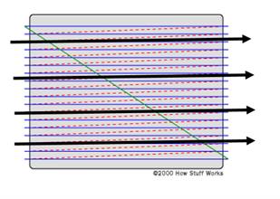Az elektronnyaláb útja
Kezdetben ezen kijelzők fekete-fehérek voltak (monokróm kijelzők), azonban később kifejlesztették a színes CRT kijelzőket. A CRT kijelzők az egyik legolcsóbb kijelző fajták, nagyon jó a betekintési szögük, valamint élettartamuk hosszú. Hátrányuk a zaj (főleg fiatalabb egyéneknél okozhat problémát), a kijelző mérete és vastagsága, illetve súlya, valamint még az energiafogyasztása is jelentős.
A PDP, vagy magyar nevén plazmakijelzők első, fekete-fehér típusát 1964-ben készítették el. 1992-ben pedig elkészítette a Fujitsu az első színes változatot is. Az első, ezen technológiát kihasználó televíziót a Pioneer mutatta be 1997-ben. Ezen kijelzőt nem éri meg 32 hüvelyknél kisebb átmérőben gyártani, ezért számítógép-kijelzőként nem jött be a köztudatba. Televíziók főleg a 90-es és 2000-es években készültek ezt a technológiát kihasználva, azonban az új technológiák, mint az OLED, QLED, Nanocell és egyebek kiszorították a piacról szinte teljesen. Ezek az új technológiák már képesek voltak felvenni a versenyt a PDP kijelzőkkel, mivel jelentősen alacsonyabb energiafogyasztás mellett kiváló betekintési szöget, vékony kijelző vastagságot, illetve jó minőségű képeket tudnak megjeleníteni.
A PDP működése az LCD-nél is egyszerűbb. A cél az, hogy a három alapszínnek megfelelő képpont fényerejét szabályozni lehessen. A PDP-nél a képpontok a CRT-hez hasonlóan látható fényt sugároznak ki, ha megfelelő hullámhosszú energia éri őket. Ebben az esetben a neon és xenon gázok keverékének nagy UV-sugárzással kísért ionizációs kisülése készteti a képpont anyagát színes fény sugárzására, pont úgy, mint a neoncsövekben. Mivel minden egyes képpont egymástól függetlenül, akár folyamatos üzemben vezérelhető, a monitor villódzástól mentes, akár 10 000:1 kontrasztarányú, tökéletes színekkel rendelkező képet is adhat, bármely szögből nézve. A PDP fogyasztása vetekszik a CRT monitorokéval, a régebbi típusok képernyője viszont előszeretettel beég. A gázkisülésnek helyet adó parányi cső ugyanúgy használódik, mint az LCD-kben lévő egyébként cserélhető, a háttér világításáért felelős fénycső: az első kétezer órában erőteljes fénye lassan csökkenni kezd, de az újabbak akár 60 000 órát is kibírnak.
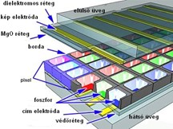A plazmakijelző képpontjának felépítése
Az elektrolumineszcens kijelzők vagy más néven ELD-típusú kijelzők az elektrolumineszcencia elvét kihasználva működnek. Ezen kijelzők úgy működnek, hogy különféle anyagokból egy afféle rétegzett szerkezetet hoznak létre. Általában GaAs (gallium-arzenid), vagy más elektrolumineszcens anyagokat raknak be két üveglap közé (ezen üveglapokat kezelik, hogy a felszínük vezetni tudja az elektromos áramot). A többi kijelző típussal szemben előnyük a hosszú élettartam (akár 100 000 óra is komoly fénykibocsátás csökkenés nélkül), valamint a széles hőmérséklettartomány (-60°C – 105°C), amelyen képesek működni. További előnyük még az is, hogy akár egy sima üveglapba is be lehet őket építeni.
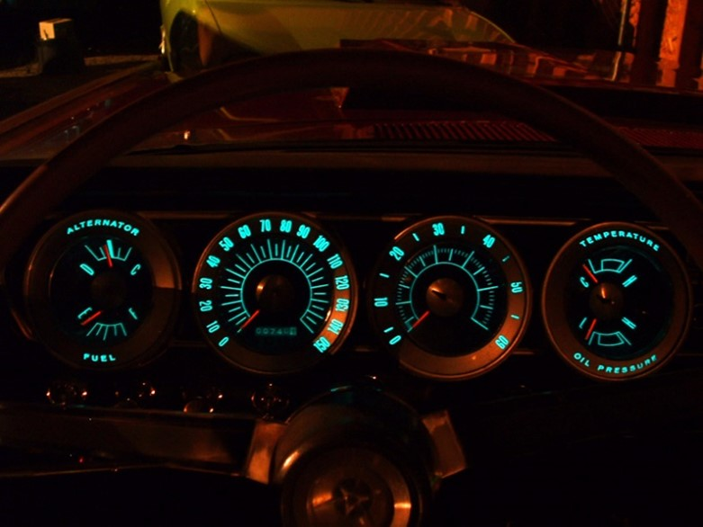Elektrolumineszcens kijelzőt általában műszerfalakban használnak
Folyadékkristályokkal már 1911 óta kísérleteznek, működő LCD (Liquid Crystal Display) kijelzőt, azonban csak a 60-as években sikerült először előállítani. Az LCD kijelzők azon az elven működnek, hogy a folyadékkristályok a fény síkját elforgatják, azonban elektromos feszültség hatására nem történik elforgatás.
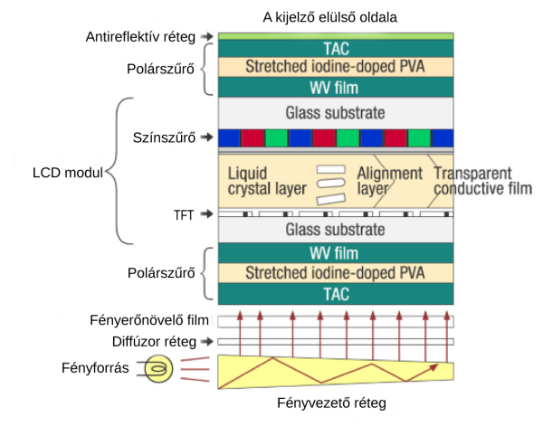Folyadékkristályos kijelző felépítése
A folyadékkristályos kijelzőket feloszthatjuk háttérvilágítás szerint háttérvilágítás nélkülire és háttérvilágítással rendelkező LCD kijelzőkre. Továbbá a háttérvilágításhoz felhasznált technológia alapján LED LCD-re, CCFL LCD-re (hidegkatódos fénycsöves lámpa) vagy EEFL LCD-re (külső elektródás lámpa). Tovvábbá még fel lehet osztani az LCD kijelzőket az alapján, hogy a folyadékkristályrács milyen módon engedi át a fényt TN-re (Twisted Nematic), VA-ra (Vertical Alignment) és IPS-re (In-Plane-Switching). Továbbá még idetartozik a QLED technológia is, amely nem összekeverendő az OLED-dal, mivel az egy teljesen más technológia.
TN kijelzők
A legelső folyadékkristályos kijelzők TN (Twisted Nematic – csavart nematikus) technológiát használtak. Ez a technológia a folyadékkristályon áthaladó polarizált fény elforgatásán alapszik. amennyiben a forgatás sikeres, a fény átjut a kijelzőn, azonban elektromos feszültség hatására a fény nem tud átjutni a polarizált lemezeken, így ez a rész sötét marad. Hátránya az alacsony betekintési szög. Manapság azonban már annyira nem szembeötlő az alacsony betekintési szög, mivel egyre jobbak a gyártási technológiák. Előnye az 1 milliszekundum körüli értékű válaszideje. Kompetitív e-sportolóknál, ahol fontos a válaszidő és a képfrissítési gyakoriság még mindig egy életképes alternatíva, köszönhetően a többi típusú LCD kijelzőkhöz képest alacsonyabb árnak.
VA kijelző
A Vertical Alignment (VA) paneleket először a Fujitsu kezdte el fejleszteni azzal a céllal, hogy a TN-nél jobb minőségű, de az IPS kijelzőknél olcsóbb megoldást tudjanak kínálni. Neve onnan ered, hogy a folyadékkristályok merőlegesen állnak a polarizáló szűrőhöz képest, majd elektromos feszültség hatására az áthaladó fény síkját a folyadékkristály nem forgatja, így a polarizáló szűrő átengedi. Tehát elektromos feszültség hatására átjut a fény, tehát fordítottan működik a TN-hez képest. Előnyük, hogy az LCD panelek között ezzel a technológiával készített kijelzők rendelkeznek a legjobb kontrasztaránnyal (nagyjából 3000:1). Hátrányuk, hogy nem pontos a színreprezentációjuk, betekintési szög tekintetében az IPS és TN között helyezkedik el.
IPS kijelző
A jelenleg talán legelterjedtebb LCD panel az IPS (In-Plane-Switching). Neve arra utal, hogy a vezérlő elektródák nem egymással szemben, hanem egy síkban (in-plane) helyezkednek el. A síkban együtt forduló folyadékkristályok alakja így különböző irányokból nézve nagyjából azonos marad, miáltal minden korábbinál szélesebb betekintési szöget kínál. Előnye a jó színhelyesség, amely még professzionális körökben is megállja a helyét. Hátrányai a valamivel lassabb válaszidő, és az ún. IPS Glow. Az IPS Glow a gyártástechnológia kiszámíthatatlansága miatt akár még a drágább modelleknél is megjelenhet.
QLED kijelző
Az utóbbi időkben megjelent a QLED technológia. Ezt a technológiát a Samsung fejlesztette ki és mai napig is használja. Lényege, hogy egy mikroszkopikus kristályréteget (ezen kristályok érdekessége, hogy átmérőjükből okoznak optikai jelenségeket, nem pedig különféle pigmentek hatására) tesz a kijelzőbe, ezáltal megnövelve a színspektrumot (kb. 1 milliárd színárnyalat). Ezeket a kristálymolekulákat ha fény éri, akkor kibocsájtják a saját színüket. Előnye, hogy nagy fényerővel rendelkeznek ezek a kijelzők, azonban az LCD technológia miatt a sötét képrészek nem teljesen feketék, mint pl. a PDP vagy LED kijelzőknél.
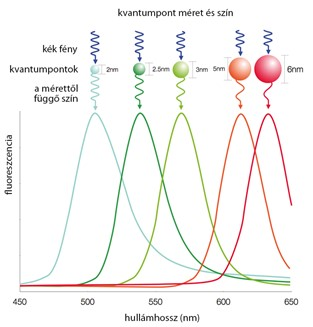A "kvantumpontok által visszavert fény hullámhossza"
A LED kijelzők fénykibocsátó diódákat használnak (LED – Light Emitting Diode). A LED technológián alapú kijelzőket feloszthatjuk OLED kijelzőkre (OLED – Organic Light Emitting Diode), vagy magyar nevén organikus fénykibocsátó dióda kijelzőkre, AMOLED kijelzőkre (AMOLED – Active Matrix Organic Light Emitting Diode), vagy magyar nevén aktív mátrixos organikus fénykibocsátó dióda kijelző.
OLED kijelző
A folyadékkristályos kijelzőkkel ellentétben a kijelzők ezen típusa szerves anyagból álló fénykibocsátó diódákat működtet a képek kivetítéséhez. Egy pixel több fénykibocsátó diódából áll. Az OLED kijelzők előnye, hogy nincs szükségük háttérvilágításra, így valódi fekete színeket is elő tudnak állítani, valamint a válaszidejük is kiváló. Hátrányuk a rövid élettartam, a beégés, illetve az alacsonyabb fényerő a legtöbb LCD kijelzőhöz képest.
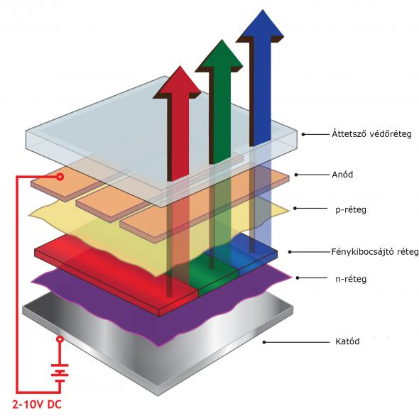Egy OLED pixel felépítése
AMOLED kijelző
Az OLED kijelzők másik variációja az aktív mátrixos OLED (AMOLED). Ezen kijelzők vékonyfilm-tranzisztorokat használnak a pixelek címzéséhez. Előnyük a ragyogó színek és a nagy felbontás és magas pixelsűrűség. Hátránya a viszonylag magas energiafogyasztás. Leginkább okostelefonokban használják őket a magas pixelsűrűség miatt.
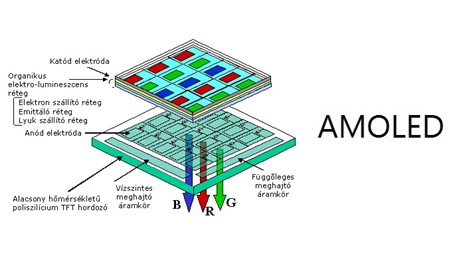Egy AMOLED pixel felépítése
Ez a kijelző típus ismertebb nevén az E-papír, elektronikus papír, vagy E-Ink. A rendszer apró mikrokapszulákból áll, amelyek negatív töltésű fehér részecskéket és pozitív töltésű fekete részecskéket tartalmaznak. Az alkalmazott elektromos mezőtől függően a megfelelő részecskék a felületre kerülnek és láthatóvá válnak.
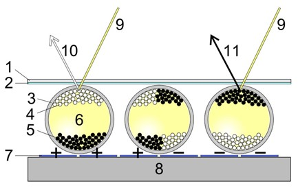Az E-papír felépítése